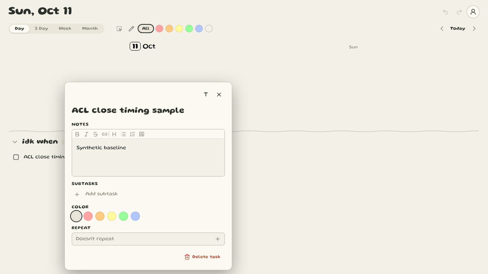
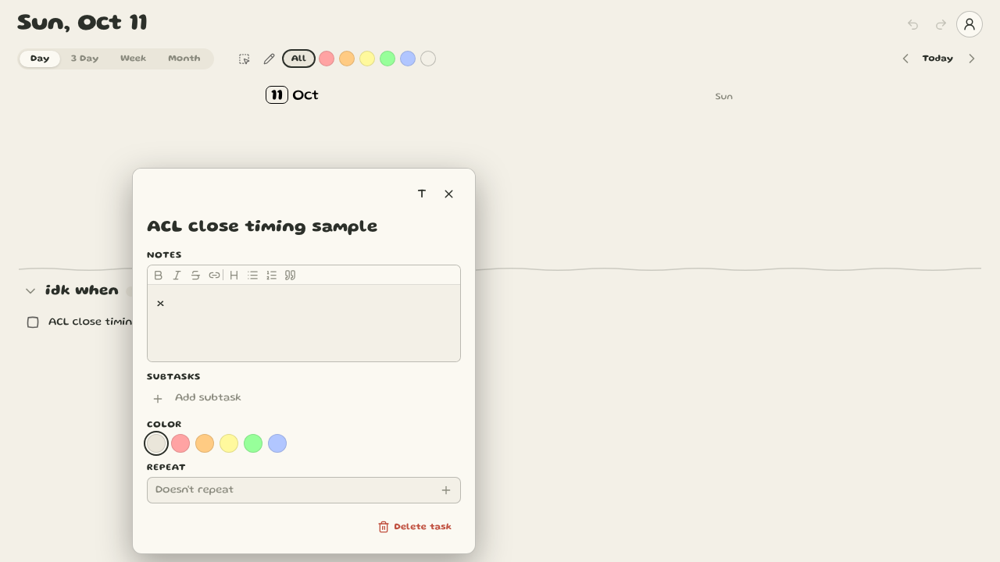
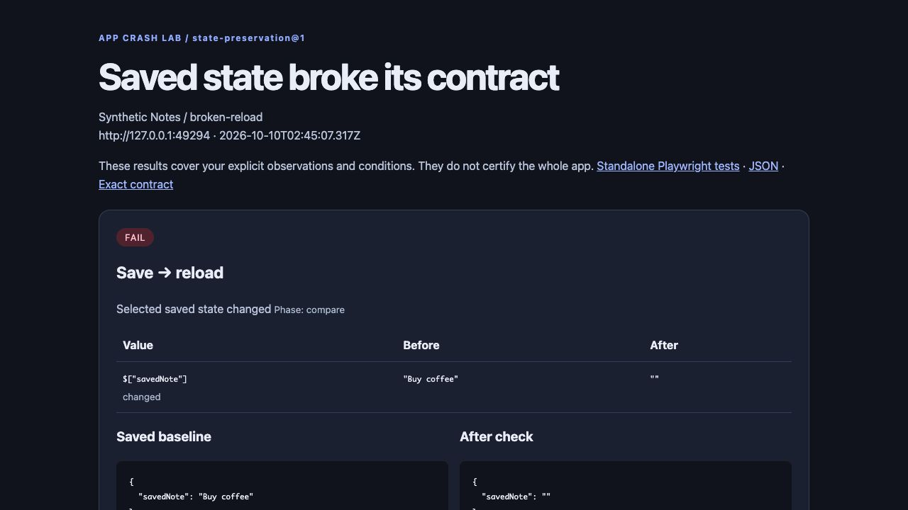

APP CRASH LAB · LOCAL OSS · v0.11.0
Your app says “Saved.”
Does the data survive
the next mistake?
Keep one persistence regression in the test suite your app already uses. Choose a browser test with Playwright, or explicitly check the data layer with Vitest. Ask your existing coding agent to inspect the real save flow and leave a test you can rerun.
Use your existing test suite → Use a runner contract Watch the 21-second case Try a no-install example Run the CLI demo GitHub
日本語の体験・導入手順
Existing-suite prompts use your installed test dependencies and coding agent; no App Crash Lab runner or skill installation. Browser lab: no install. Runner CLI: Node 22+ and Playwright/Chromium; no runtime LLM, account or API key. MIT license.
One test, in the suite you already use
Choose the scope, then copy the request into your coding agent in your app project. No App Crash Lab installation is required for these paths. Your app's existing dependencies and local setup are still needed; the agent must report a missing prerequisite.
Playwright: browser behavior
Adapt one regression to your real UI and complete saved data. Keep a normal control, then check an earlier-tab save or a selected storage failure.
Requires an existing Playwright suite. An unavailable setup is reported separately; a unit test cannot establish browser preservation.
Vitest: data layer only
Explicitly check the real save/load path in your existing Vitest suite. Compare the full saved record and any intentional transformation on load.
Requires an existing Vitest suite. This scope does not test browser UI, actual reload, peer tabs or backup restore.
These requests reuse the published native and saved-state guidance. They do not prove an agent has run your app. Review the generated test, its scope and the actual result. Prefer to inspect a measured spec directly? Choose a native example. For real JSON backup export/import, use the backup roundtrip request.
It exported a backup it could not restore. On unchanged local DevTasks source, a synthetic task with a custom DOCS category exported, then the same file was rejected in a fresh browser context. The built-in FEATURE control restored.
Watch the 21-second MP4 · Run the separate Playwright round-trip test. Pinned local source and synthetic records, not the public service. This test supplements the CLI preservation checks; it is not author adoption. Only initial loading was trimmed; the interactions play at 1×.
Three ways a green test can mislead
Start with the question your test needs to answer. Each example includes the counterexample, controls and replay steps.
Is the text still right?
The visible count stays correct while Saved becomes 保存しました. A count-only check passes; adding the expected text catches the same fault.
Start in your browser, with no install. CLI replay needs Node 22+, Python 3 and Chromium.
Try count versus text →
Replay with the CLI
Has the failure finished?
An input check passes while a failed response is still held. Waiting for the failure signal first catches the input being erased.
Node 22+ and Chromium; no app server. The summary's 3 passed includes one intentionally expected assertion failure.
Run the three failure-boundary cases →
Is this the intended UI?
Missing CSS exposes a hidden button, letting an invalid test route pass. With CSS missing, the corrected contract checks the starting UI state and stops at INCONCLUSIVE.
Prepare a disposable MealAI copy and local CSS. Requires Python 3.9+, Node 22+ and Chromium.
Compare all four CSS controls →
The first two are deliberately broken synthetic fixtures. The CSS case tests our local setup, not a MealAI production defect. These are separate experiments; their guides explain the different expected exit codes.
33 seconds: a save disappears after reload, a rejected edit corrupts a value, then the fixed fixture preserves it. Recorded from the bundled examples. Recording and replay steps.The last edit disappeared before reload.
In an unchanged local Chalky build at 4bf2b174, App Crash Lab could not establish the expected saved note. It stopped at INCONCLUSIVE / baseline rather than reporting a reload result.
We isolated the behavior in a separate Playwright diagnostic: reopen a saved note, replace its text with x using keyboard input, confirm x is visible, then close and reopen it.
| After the edit | Reopened note | After reload |
|---|
No added wait
44ms measured edit-to-close | Synthetic baseline
Last edit lost | Old value |
Add 350ms
397ms measured edit-to-close | x | x |
Two fresh contexts on the same pinned source, macOS / Node22.16.0 / Playwright1.64.0. The wait is a diagnostic control, not a fix or a save-completion signal. These timings do not establish an exact threshold. Public-site behavior, author confirmation and a corrected build are unverified.
View the original screenshots after reload

No added wait: the old note returned. Original screenshot from the fresh ZIP run.
350ms control: the edited value remained. The app source was unchanged.Run the two-condition test → Download 7-file ZIP
Requires Node22+ and the linked local Chalky setup; no login or PDS. On the tested revision, the expected reproduction is 1 failed / 1 passed, with a nonzero exit. 日本語の切り分け解説.
Same save. Three versions. Different outcomes.
Actual browser test results from deliberately broken synthetic fixtures. The defects are authored controls, not newly discovered production bugs.
| Fixture | Reload | Rejected update |
|---|
| broken-reload | FAIL | PASS |
| broken-reject | PASS | FAIL |
| fixed | PASS | PASS |
See what disappeared.

The report shows baseline and observed values, separate rejection confirmation, screenshots, traces and a standalone Playwright spec.
Let Codex choose a native test or a contract
Describe one save workflow in your app. The repo-local skill inspects the actual source and explains the complete saved data and visible result it will observe. For a matching boundary in an existing Playwright suite, it adapts one native test without App Crash Lab JSON or its runner. Explicit runner contracts and real JSON backup roundtrips keep the existing 0.11.0 runner path. Review the observations and actual result.
Before the first save, verify that each action targets the intended unique element in the rendered UI and still reads the intended value after input. Keep setup failures separate from a measured data loss, with saved DOM and screenshots.
Already using Playwright? Review the three native failure patterns and app-specific adaptations. Choose the relevant one; a requested real JSON restore still needs the complete backup check.
Already using Vitest? For an explicitly requested data-layer save/load check, the skill can reuse your existing tests. Compare the complete saved record separately from intentional load-time resets. A jsdom store rehydration is not a browser reload, two-tab test or real backup restore; those requests still need the corresponding browser check.
Install with the Skills CLI
With Node 22.20+, open your app project's directory and review the skill source. If .agents/skills/app-crash-lab already exists, keep and review that folder instead of installing over it.
npx --yes skills@1.7.2 add https://github.com/aichance/business-ai-recipes --skill app-crash-lab --agent codex --copy --yes --json
This copies the four skill files into this project's .agents/skills/app-crash-lab and adds skills-lock.json. The installer also keeps its own user-level metadata. We verified the installer command on macOS with Node 24.19.0 and Skills CLI 1.7.2. The v0.2.2 ZIP is checked separately against all four source files. Installing instructions alone does not run a test.
Manual ZIP installation
This route also works with an older Node 22 runtime.
- Download skill v0.2.2 (ZIP) · SHA256 · Review source.
- Extract the whole
app-crash-lab folder into .agents/skills/ in your app project. Keep an existing folder if one is already there. This adds local instructions, not a globally installed plugin. - Open that app project in Codex and ask:
$app-crash-lab Check my app’s save workflow with synthetic data.
Inspect the source and explain what you will observe. For a matching boundary
in my existing Playwright suite, adapt and run one native test without another runner.
Otherwise use the pinned runner contract path.
Test one requested boundary; do not replace an explicitly requested backup roundtrip with reload.
Keep the app unchanged and tell me the result and exact rerun command.
If the skill is not available in your selector, point Codex directly to .agents/skills/app-crash-lab/SKILL.md. Codex repo-local skill locations.
The native path reuses your existing Playwright environment. The contract path requires Node22+, npm and Chromium; first use can download the pinned runner/browser. The test runner makes no LLM calls; setup uses your existing coding agent. Use a disposable local app with synthetic data. Unsupported flows are reported, not replaced by a passing demo. The default workflow keeps your app unchanged and does not upload or publish results. Installing the folder alone is not a test result.
Check your app with your coding agent
Open your app project in your usual coding agent, copy this prompt, and let it inspect the save flow and write the config. It asks for an actual run and a report, not a code change to make the check pass.
For JSON export/import, use the backup-specific setup prompt below.
Uses your existing agent and its permissions. The runner makes no LLM calls. Use a disposable localhost app and synthetic data; agent configuration can still need your input.
日本語で始める：普段のコーディングAIで、検査したいWebアプリのプロジェクトを開きます。下の導入プロンプトを貼り、「設定を保存して再読込する」など最初に試したい操作を一つ添えて実行してください。英語のプロンプトのまま使えます。
保存値の比較、検査結果、レポートと再実行用Playwrightテストの保存先を確認できます。ソース公開は不要。Node 22+、使い捨てのローカル開発環境、合成データを使います。セットアップが止まった場合は、アプリの不具合と決めつけず、止まった手順を確認してください。
What needs to survive? The CLI checks the saved values you select. To check a downloaded JSON file across rejection and a fresh import, use the full-file round-trip example: a separate Playwright test that compares the complete parsed JSON, including metadata. Adapt its app-specific steps and expected values.
Prefer to write the config yourself? Follow the manual setup guide. This prompt is an optional setup aid; its presence is not proof your app was tested.
Check your app’s real backup
Already have JSON export/import? Copy this separate prompt into your app project. Your coding agent inspects the real save flow, creates a backup contract, runs it, and reports whether the downloaded file restores in a fresh context.
バックアップを検査する：下のプロンプトに「カスタム分類のタスク」など復元したいデータを一つ添えて、普段のコーディングAIへ貼り付けてください。合成データで検査し、設定・実行結果・再実行用テストを確認します。
0.11.0 browser-local JSON mode. Compares complete selected records, rather than a success toast or count alone. One exact native restore confirmation is opt-in. One declared HTML preview and commit is also supported in 0.8; use restore.commit instead of the native option. Multiple confirmations, ZIP/encrypted backups and intentional ID rewriting need a different test. Unsupported setup must be reported; it must not be bypassed to create a pass.
Node 22+, npm and Playwright/Chromium. Uses your existing coding agent; the test runner makes no LLM calls. Manual backup contract and limits.
Try it with two commands
Node 22+ and npm required. Run this in an empty folder. The first command installs Chromium; the second fetches the pinned package from our GitHub release and runs three synthetic fixtures. No cloning, account or API key.
npx --yes --package=@playwright/test@1.64.0 playwright install chromium
npx --yes --package=https://github.com/aichance/business-ai-recipes/releases/download/app-crash-lab-v0.11.0/app-crash-lab-0.11.0.tgz app-crash-lab demo
Open the absolute index.html path printed in your terminal. Reports stay under .crash-lab/ in your current folder. The demo server stops automatically. Initial dependency/browser downloads need internet and disk space; Linux may need browser system libraries too.
Expected result: one reload failure, one rejected-update failure, and two passing checks for the fixed fixture. These are seeded defects, not a test of your own app.
Then test your app: create a starter in your working folder:
npx --yes --package=https://github.com/aichance/business-ai-recipes/releases/download/app-crash-lab-v0.11.0/app-crash-lab-0.11.0.tgz app-crash-lab init my-app.json
This does not run a browser or test your app, and never overwrites an existing file. The starter uses Synthetic Notes selectors. Edit my-app.json for your local URL, route, save steps, saved values and rejection signal. Then install Chromium if needed and run:
npx --yes --package=@playwright/test@1.64.0 playwright install chromium
npx --yes --package=https://github.com/aichance/business-ai-recipes/releases/download/app-crash-lab-v0.11.0/app-crash-lab-0.11.0.tgz app-crash-lab run my-app.json
Use a disposable local instance and synthetic records. The setup guide includes a prompt your coding agent can use to build the config, supported observations, and standalone test rerun instructions. Version 0.3 also supports an exact native alert() rejection message.
Prefer a manual download? Download the 0.11.0 package, run tar -xzf app-crash-lab-0.11.0.tgz and cd package, then npm install --ignore-scripts --no-audit --no-fund, npx playwright install chromium and npm run demo. The tarball has no lockfile; a Git source checkout uses npm ci instead. Release and checksums.
Can the app restore its own backup?
Download the app’s actual JSON, verify its selected saved records, restore the unchanged bytes in a fresh empty context, then compare every selected value again after reload. The unchanged local DevTasks control passes; its custom-category backup fails to restore.
0.8 also handles one declared HTML import preview/commit. The selected stored records must remain empty until that click; completion, full records and reload still have to match. TOEIC Tracker: one review, vocabulary and score; all ten exported domains includes the pinned app and repeatable configuration. 0.7 added one exact native restore confirmation. In our local Paisa check, complete transactions and balances survive fresh restore and reload. Confirmation alone never counts as a pass.
Copy the backup setup prompt · Configure the real backup check · Pinned app, contracts and measured scope
Disposable browser-local JSON apps only. This check keeps export size/hash and comparison metadata, without captured state, screenshots or traces. Declared contract inputs remain in the output. These are operator tests with synthetic records, not additional independent users.
Tested beyond the bundled notes app
The same runner also checked a server-backed inventory fixture and an unchanged local build of Glypha. Glypha retained its saved scene and ETag after reload and a 422-rejected update. Its adapter adds configuration, not app-specific runner code.
Glypha is a passing control, not a bug discovery or evidence of author adoption. Checks cover selected values and explicit expectations; a URL alone does not define correct behavior. Cross-origin services, service workers, power loss and multi-user races are outside this first version.
Used on a real app, then reused on its next version
Sethera's author reported running both preservation checks and both generated Playwright tests on Windows, with Node 22.16.0 and Playwright 1.64.0. They then applied the same contract to Sethera v0.5.0 (5c81c5d) and reported both checks passing.
This Sethera author's public report is separate from our local compatibility tests. We have not replayed their raw logs or verified all Windows environments. Read the scope and use the Sethera example.
nvim-edu: an author tested their own lesson progress
The nvim-edu author reported two CLI reload checks and both exported Playwright tests passing with App Crash Lab0.6.2 in the official Playwright1.64.0 Noble image. The stored best score and rendered progress survived reload.
They also found a missing ZIP utility and a gap in confirming the second attempt. The updated setup and two contracts use Python3 extraction and explicitly wait for the second completion. Their public report covers the earlier contract; their execution of the revision and raw logs are unverified.
If these checks are useful, star the repository to find them again before your next release. Starring is optional.
What happened on your app?
Share your result or the part that made setup difficult. Include the framework, which checks ran and a sanitized result. Don't include private records or credentials.
Built and operated by aichance with AI assistance and a human owner. Demo results come from our local runs on 2026-10-10. The independent author reports are linked and attributed separately.